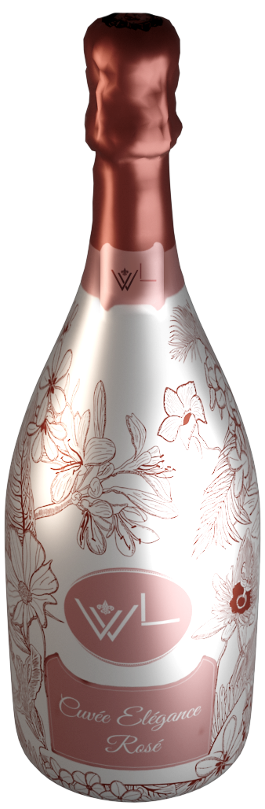

Plaisir est de vous inviter à explorer notre gamme variée de vins, allant des cépages classiques aux assemblages audacieux, chacun portant la signature distinctive de WineLux.
Venez visiter nos pages sur les réseaux sociaux tel qu'Instagram, Facebook ou encore YouTube!
Explorez avec nous le fascinant processus de vinification qui donne naissance à nos vins exceptionnels. Chez WineLux, chaque bouteille est le fruit d'une attention méticuleuse portée à chaque étape, alliant tradition et innovation.
Notre aventure commence dans nos vignobles luxuriants, soigneusement sélectionnés pour leurs caractéristiques uniques. Les raisins, choyés par le climat et les sols riches du Luxembourg, sont récoltés à la main avec une précision artisanale.
À la cave, nos vignerons expérimentés orchestrent la magie de la fermentation, veillant à préserver les arômes naturels et les nuances subtiles de chaque cépage. Le processus d'élevage en fût de chêne confère à nos vins une complexité et une profondeur uniques, résultat de notre engagement envers l'excellence.
Nous accordons une attention particulière à l'assemblage, où les différents vins sont méticuleusement combinés pour créer des cuvées équilibrées et expressives. Chaque bouteille est ensuite étiquetée avec notre emblème, symbole de qualité et d'authenticité.
Nous vous invitons à plonger dans cette aventure sensorielle. Visitez nos vignobles, explorez notre cave et dégustez nos créations.
Un vin blanc raffiné aux arômes floraux et une finale persistante. Idéal pour accompagner les fruits de mer.
Prix: 25,00 €
Un vin rouge complexe avec des notes de fruits rouges mûrs et des tanins soyeux. Parfait avec une viande grillée.
Prix: 35,00 €
Un vin rosé léger et frais, offrant des arômes de fraises et une acidité équilibrée. Idéal pour les journées ensoleillées.
Prix: 18,00 €
Un assemblage unique de cépages, ce vin offre une palette complexe d'arômes et une longue finale. À déguster lentement.
Prix: 50,00 €
Que vous soyez à Luxembourg-Ville, Esch-sur-Alzette, Echternach, ou dans toute autre ville du Grand-Duché, plongez dans l'expérience WineLux et découvrez des arômes uniques et des bouquets raffinés. Commandez dès maintenant et laissez-nous vous livrer l'excellence directement à votre porte, car chaque bouteille de WineLux est une invitation à savourer le luxe, où que vous soyez au Luxembourg.
Super produit ! Je le recommande vivement. Très satisfait.
Excellent service client. Réponses rapides et utiles.
Vin correct. Réponses tardives :/
La dégustation de ce vin a été une expérience sensorielle exceptionnelle, une véritable odyssée à travers les saveurs et les arômes les plus subtils.
John Doe
Super produit ! Je le recommande vivement. Très satisfait.
Alfreda Clark
Excellent service client. Réponses rapides et utiles.
Jade Castellane
Vin correct. Réponses tardives :/
Sébastien Muller
La dégustation de ce vin a été une expérience sensorielle exceptionnelle, une véritable odyssée à travers les saveurs et les arômes les plus subtils.